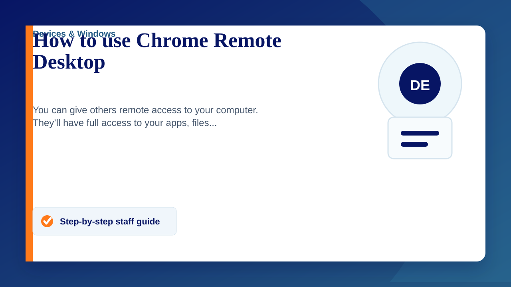

You can give others remote access to your computer. They’ll have full access to your apps, files, emails, documents and history.
- On your computer, open Chrome.
- In the address bar at the top, enter remotedesktop.Google.com/support , and press Enter.
- Under “Get Support, “ click Download.
- Follow the on-screen directions to download and install Chrome Remote Desktop.
- Under “Get Support,” select Generate Code.
- Copy the code and send to the person you want to have access to your computer.
- When that person enters your access code on the site, you will see a dialogue with their e-mail address. Select Share to allow them full access to your computer.
- To end a sharing session, click Stop Sharing.
The access code will only work one time. If you are sharing your computer, you will be asked to confirm that you want to continue to share your computer every 30 minutes.